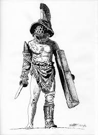

What is Age of Decadence?

Age of decadence is a hardcore RPG game that takes a place in the specific post-apocalyptic setting. The events of the game are happening 400 years after the Great War, which left the world in a poor and devastated condition, where people have to scavenge for scraps in order to survive and naked power grabs are something you can see all the time.
If you like to play casual games that require very little to no effort from you then you won't be satisfied with this game and you won't be able to relax playing it unless you like some serious challenge. Age of Decadence mechanics are ruthless and the game does not forgive mistakes. Combat should be avoided if your character is not combat-type, e.g. it is very challenging to win a fight if you are a talker, similar like in real life.
If something is simply unrealistic and makes no sense, there it's not in the game. The main story plot, as well as minor stories, say, in faction quests, are having logical results, very often hard to predict, but still logical.
The game is very well-written. Storytelling is top-notch and here comes another aspect of the game. It's mostly text-based, that's why if you don't like to read you will probably not enjoy it, as every event is well described in the dialogs or notifications.